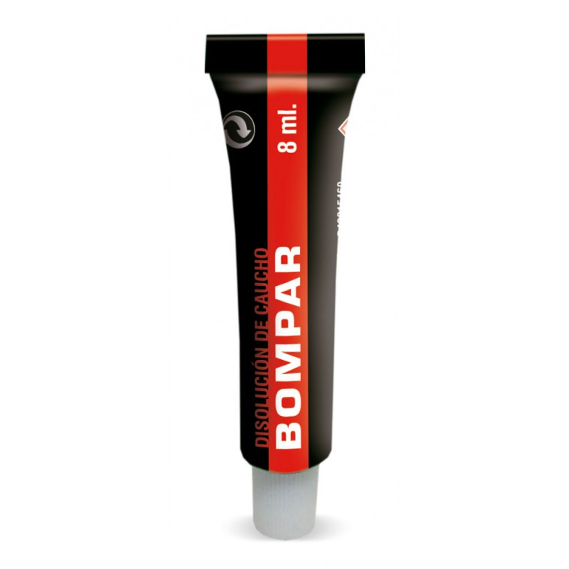

1,50 € |
||
|  |
Disolución vulcanizante - tubo de 8 ml Disolución vulcanizante para utilizar en frío o caliente en cámaras, cubiertas y otras reparaciones con parches. Después de limpiar o lijar bien el neumático, se aplica la disolución extendiéndola alrededor del pinchazo, se deja secar cinco minutos y posteriormente se pega el parche, presionándolo para que se sujete mejor |